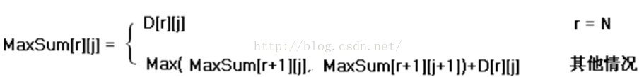

递归到动规的一般转化方法
递归函数有n个参数，就定义一个n维的数组，数组的下标是递归函数参数的取值范围，数组元素的值是递归函数的返回值，这样就可以从边界值开始， 逐步填充数组，相当于计算递归函数值的逆过程。
动规解题的一般思路
1. 将原问题分解为子问题
- 把原问题分解为若干个子问题，子问题和原问题形式相同或类似，只不过规模变小了。子问题都解决，原问题即解决(数字三角形例）。
- 子问题的解一旦求出就会被保存，所以每个子问题只需求 解一次。
2.确定状态
- 在用动态规划解题时，我们往往将和子问题相关的各个变量的一组取值，称之为一个“状 态”。一个“状态”对应于一个或多个子问题， 所谓某个“状态”下的“值”，就是这个“状 态”所对应的子问题的解。
- 所有“状态”的集合，构成问题的“状态空间”。“状态空间”的大小，与用动态规划解决问题的时间复杂度直接相关。 在数字三角形的例子里，一共有N×(N+1)/2个数字，所以这个问题的状态空间里一共就有N×(N+1)/2个状态。
整个问题的时间复杂度是状态数目乘以计算每个状态所需时间。在数字三角形里每个“状态”只需要经过一次，且在每个状态上作计算所花的时间都是和N无关的常数。
3.确定一些初始状态（边界状态）的值
以“数字三角形”为例，初始状态就是底边数字，值就是底边数字值。
4. 确定状态转移方程
定义出什么是“状态”，以及在该“状态”下的“值”后，就要找出不同的状态之间如何迁移――即如何从一个或多个“值”已知的 “状态”，求出另一个“状态”的“值”(递推型)。状态的迁移可以用递推公式表示，此递推公式也可被称作“状态转移方程”。
数字三角形的状态转移方程:

能用动规解决的问题的特点
1) 问题具有最优子结构性质。如果问题的最优解所包含的 子问题的解也是最优的，我们就称该问题具有最优子结 构性质。
2) 无后效性。当前的若干个状态值一旦确定，则此后过程的演变就只和这若干个状态的值有关，和之前是采取哪种手段或经过哪条路径演变到当前的这若干个状态，没有关系。
动态规划的本质，是对问题状态的定义和状态转移方程的定义。
动态规划是通过拆分问题，定义问题状态和状态之间的关系，使得问题能够以递推（或者说分治）的方式去解决。
本题下的其他答案，大多都是在说递推的求解方法，但如何拆分问题，才是动态规划的核心。
而拆分问题，靠的就是状态的定义和状态转移方程的定义。
状态的定义？
给定一个数列，长度为N，
求这个数列的最长上升（递增）子数列（LIS）的长度.
以
1 7 2 8 3 4
为例。
这个数列的最长递增子数列是 1 2 3 4，长度为4；
次长的长度为3， 包括 1 7 8; 1 2 3 等.
要解决这个问题，我们首先要定义这个问题和这个问题的子问题。
有人可能会问了，题目都已经在这了，我们还需定义这个问题吗？需要，原因就是这个问题在字面上看，找不出子问题，而没有子问题，这个题目就没办法解决。
所以我们来重新定义这个问题：
给定一个数列，长度为N，
设 为：以数列中第k项结尾的最长递增子序列的长度.
为：以数列中第k项结尾的最长递增子序列的长度.
求 中的最大值.
中的最大值.
而对于来讲， 都是的子问题：因为以第k项结尾的最长递增子序列（下称LIS），包含着以第
都是的子问题：因为以第k项结尾的最长递增子序列（下称LIS），包含着以第 中某项结尾的LIS。
中某项结尾的LIS。
给定一个数列，长度为N，
设 为：
为：
在前i项中的，长度为k的最长递增子序列中，最后一位的最小值.  .
.
若在前i项中，不存在长度为k的最长递增子序列，则为正无穷.
求最大的x，使得 不为正无穷。
不为正无穷。
上述的就是状态，定义中的“为：在前i项中，长度为k的最长递增子序列中，最后一位的最小值”就是对状态的定义。
状态转移方程？
上述状态定义好之后，状态和状态之间的关系式，就叫做状态转移方程。
比如，对于LIS问题，我们的第一种定义：
设
设A为题中数列，状态转移方程为：
（根据状态定义导出边界情况）
用文字解释一下是：
以第k项结尾的LIS的长度是：保证第i项比第k项小的情况下，以第i项结尾的LIS长度加一的最大值，取遍i的所有值（i小于k）。
动态规划迷思
a. “缓存”，“重叠子问题”，“记忆化”：
这三个名词，都是在阐述递推式求解的技巧。以Fibonacci数列为例，计算第100项的时候，需要计算第99项和98项；在计算第101项的时候，需要第100项和第99项，这时候你还需要重新计算第99项吗？不需要，你只需要在第一次计算的时候把它记下来就可以了。
上述的需要再次计算的“第99项”，就叫“重叠子问题”。如果没有计算过，就按照递推式计算，如果计算过，直接使用，就像“缓存”一样，这种方法，叫做“记忆化”，这是递推式求解的技巧。这种技巧，通俗的说叫“花费空间来节省时间”。都不是动态规划的本质，不是动态规划的核心。
b. “递归”：
递归是递推式求解的方法，连技巧都算不上。
c. "无后效性"，“最优子结构”：
上述的状态转移方程中，等式右边不会用到下标大于左边i或者k的值，这是"无后效性"的通俗上的数学定义，符合这种定义的状态定义，我们可以说它具有“最优子结构”的性质，在动态规划中我们要做的，就是找到这种“最优子结构”。
在对状态和状态转移方程的定义过程中，满足“最优子结构”是一个隐含的条件（否则根本定义不出来）。对状态和“最优子结构”的关系的进一步解释，什么是动态规划？动态规划的意义是什么？ - 王勐的回答 写的很好，大家可以去读一下。
需要注意的是，一个问题可能有多种不同的状态定义和状态转移方程定义，存在一个有后效性的定义，不代表该问题不适用动态规划。这也是其他几个答案中出现的逻辑误区：
动态规划方法要寻找符合“最优子结构“的状态和状态转移方程的定义，在找到之后，这个问题就可以以“记忆化地求解递推式”的方法来解决。而寻找到的定义，才是动态规划的本质。